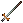

装備品の強化
１．装備品強化の概要
iron ingot、normal leather、woodのように標準の素材で作られている装備品やモンスターや宝箱などに入っている普通のマジック装備品に、
特殊素材の効果を付与させて強化することができます。
特殊素材の効果は装備品ごとに１回だけ付与させることができ、その効果は使用した素材によって様々ですが、
強化に失敗して装備品を破壊することもあります。
２．装備品強化の手順
装備品の強化は下の流れで行います。
- 鍛冶・裁縫などの作成メニューを出して、強化に使用する素材を決定します。
使用する素材の一番下にある「色をつけない」は、特殊素材の色を装備品に反映させないようにするボタンです。
- アイテム強化ボタンを押し、ターゲットを強化したい装備品に合わせます。
- 強化に成功すると、使った特殊素材の効果を反映した装備品となります。
なお、強化前の性能と使用する特殊素材の種類により、一定の確率で失敗または破壊します。
３．装備品強化に関する仕様
（１）必要スキル
装備品を強化しようとするとき、装備品と特殊素材に関連したスキルが必要となります。
- もととなる装備品を作成可能なスキル
- 強化に使用する特殊素材を扱うスキル
インゴット
| |
Dull |
Shadow |
Copper |
Bronze |
Gold |
Agapite |
Verite |
Valorite |
| 画像 |
 |
 |
 |
 |
 |
 |
 |
 |
必要
スキル |
65.0 |
70.0 |
75.0 |
80.0 |
85.0 |
90.0 |
95.0 |
99.0 |
革
| |
Spined |
Horned |
Barbed |
| 画像 |
 |
 |
 |
必要
スキル |
65.0 |
80.0 |
99.0 |
木材
| |
Oak |
Ash |
Yew |
Heart
wood |
Blood
wood |
Frost
wood |
| 画像 |
 |
 |
 |
 |
 |
 |
必要
スキル |
65.0 |
75.0 |
85.0 |
95.0 |
95.0 |
95.0 |
（２）強化できない装備品
生産スキルで作成できない装備品、特殊素材を使用しない布製の頭防具、既に強化された装備品（Artifactなど）を強化することはできません。
生産スキルで作成できない装備品は、以下のものです。
- long sword
 pitch fork
pitch fork black staff
black staff crook
crook wand
wand club（画像と逆向き）
club（画像と逆向き）
（３）使用する素材の量
強化の際に使用する素材の量は、もとの装備品を作成するために必要な量で、強化に成功したとき消費されます。
破壊するなど強化に失敗した場合、０〜「装備品を作成するのに必要な素材数の半分」までのランダムで素材を消費します。
（４）道具の消耗
強化を行うときに使用した作成用道具は、鍛冶用のancient smith hammer以外、消耗することはありません。
（５）強化の効果
強化により装備品に付加される効果は、別ページにまとめています。
特殊素材が付与する効果
（６）強化の成功率
強化の成功率は、以下の項目が影響します。
- 使用した特殊素材で強化されるパラメータについて、もととなる装備品での数値の高さが影響する。
基本的に、全く同じ性能の装備品を強化するとき、強化されるプロパティ数が多くなるほど強化成功率は下がる。
- 専門スキルの高さは、"スキルによる補正"に影響する。それにより、強化の成功率に影響を与える。
"スキルによる補正"は、スキル100未満のときは補正なし、スキル100のときは＋1、さらにスキル＋10ごとに1％ずつ加算される。
鍛冶スキルを使用する強化の場合、スキル180でプロパティごとの成功率に＋9％のボーナスが加算される。
- ガーゴイル種族でImbuing[練成]スキルを所持しているキャラクターは、Imbuingスキル100のとき＋1、110のとき＋２、120のとき＋3％が上記の成功率ボーナスに加算される。
―強化結果の発生確率―
- 各属性抵抗値の強化
成功率 ： ８０−（強化前の属性抵抗値）＋（スキルによる補正）[％]
破壊率 ： １０＋（強化前の属性抵抗値）−（スキルによる補正）[％]
失敗率 ： １０[％]
- 耐久性の強化
成功率 ： ８０−（強化前の耐久性/４０）＋（スキルによる補正）[％]
破壊率 ： １０＋（強化前の耐久性/４０）−（スキルによる補正）[％]
失敗率 ： １０[％]
- 装備条件の強化
成功率 ： ８０−（装備条件/４）＋（スキルによる補正）[％]
破壊率 ： １０＋（装備条件/４）−（スキルによる補正）[％]
失敗率 ： １０[％]
- 運の強化
成功率 ： ７０−（強化前装備品の運/２）＋（スキルによる補正）[％]
破壊率 ： ２０＋（強化前装備品の運/２）−（スキルによる補正）[％]
失敗率 ： １０[％]
- 攻撃属性の強化
成功率 ： ８０−（強化前の属性攻撃比率/４）＋（スキルによる補正）[％]
破壊率 ： １０＋（強化前の属性攻撃比率/４）−（スキルによる補正）[％]
失敗率 ： １０[％]
- HP回復の強化：暫定
成功率 ： ８０−（強化前のHP回復値×１０）＋（スキルによる補正）[％]
破壊率 ： １０＋（強化前のHP回復値×１０）−（スキルによる補正）[％]
失敗率 ： １０[％]
- 武器ダメージの強化：暫定
成功率 ： ８０−（強化前の武器ダメージ）/４＋（スキルによる補正）[％]
破壊率 ： １０＋（強化前の武器ダメージ）/４−（スキルによる補正）[％]
失敗率 ： １０[％]
- 命中の強化：暫定
成功率 ： ８０−（強化前の命中）/２＋（スキルによる補正）[％]
破壊率 ： １０＋（強化前の命中）/２−（スキルによる補正）[％]
失敗率 ： １０[％]
- 速度の強化：暫定
成功率 ： ８０−（強化前の速度）/２＋（スキルによる補正）[％]
破壊率 ： １０＋（強化前の速度）/２−（スキルによる補正）[％]
失敗率 ： １０[％]
- ライフリーチ：暫定
成功率 ： ８０−（強化前ライフリーチ強度）/２＋（スキルによる補正）[％]
破壊率 ： １０＋（強化前ライフリーチ強度）/２−（スキルによる補正）[％]
失敗率 ： １０[％]
- 重量軽減、ランダムプロパティの付加：暫定
成功率 ： ８０＋（スキルによる補正）[％]
破壊率 ： １０−（スキルによる補正）[％]
失敗率 ： １０[％]